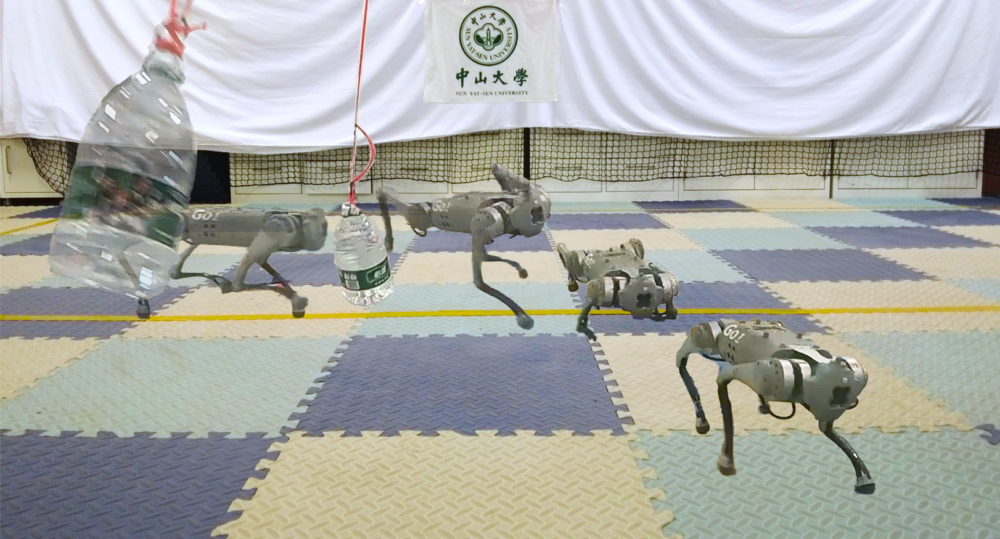
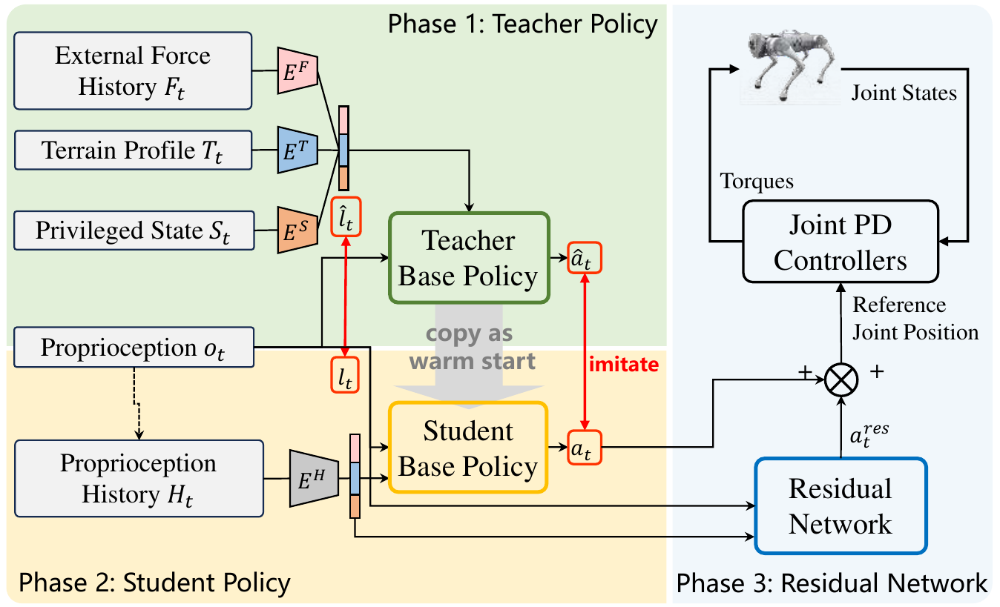
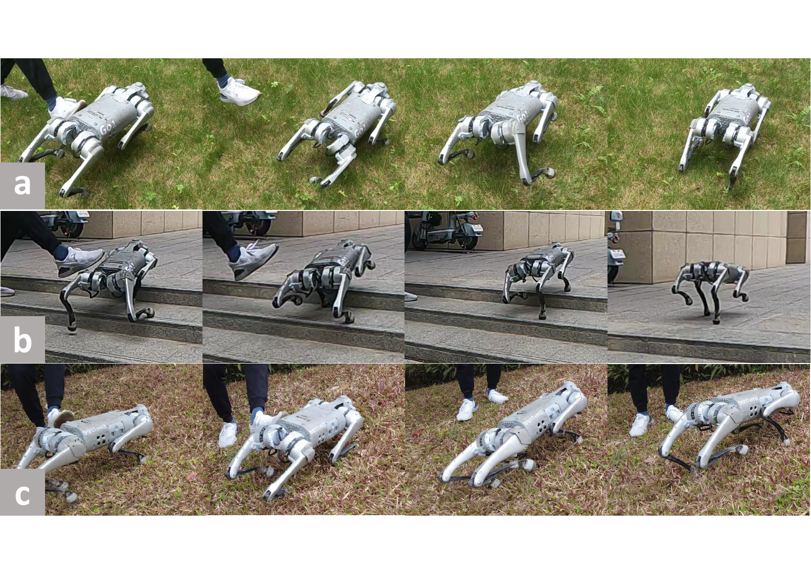

Disentangle the world
Dedicated encoders learn force, terrain, and privileged state features separately.
Research project · IROS 2024
PA-LOCO learns quadruped locomotion that responds to external perturbations. Separate force, terrain, and state representations guide a student policy, while a residual network sharpens its response.

The teacher sees information unavailable on the robot, including terrain, dynamics, and external force history. The student learns to infer a compact representation from proprioception. A lightweight residual policy then adjusts the final action under perturbation.
Dedicated encoders learn force, terrain, and privileged state features separately.
A student encoder uses 50 steps of proprioceptive history to estimate the latent features.
A residual policy complements the student controller while its base policy remains fixed.

One minute of indoor disturbance tests and outdoor terrain trials from the PA-LOCO research archive.
Explore the preprintIn the paper's lateral impact experiment, PA-LOCO matched or exceeded the comparison policies across both tested pendulum weights.
successful trials with PA-LOCO (9 / 10)
after the 4.6 kg impact, compared with 0.89 s for MEFA
successful trials with PA-LOCO (10 / 10)
Results reported in Table V of the IROS 2024 paper. Success rate and recovery time are measured in the real-robot pendulum experiment.
Grass, stairs, and slopes in the paper's outdoor evaluation.

Find the published paper, open preprint, and training code in one place.
@INPROCEEDINGS{paloco_xiao_2024,
author={Xiao, Zhiyuan and Zhang, Xinyu and Zhou, Xiang and Zhang, Qingrui},
booktitle={2024 IEEE/RSJ International Conference on Intelligent Robots and Systems (IROS)},
title={PA-LOCO: Learning Perturbation-Adaptive Locomotion for Quadruped Robots},
year={2024},
pages={9110-9115},
doi={10.1109/IROS58592.2024.10801753}
}